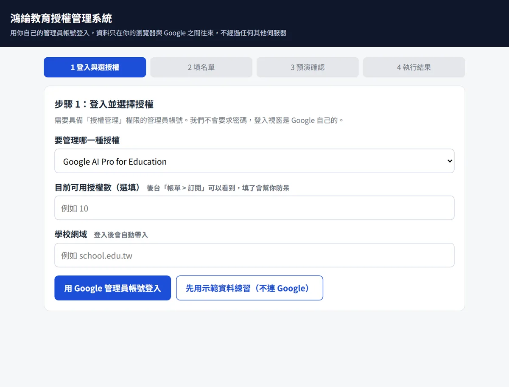
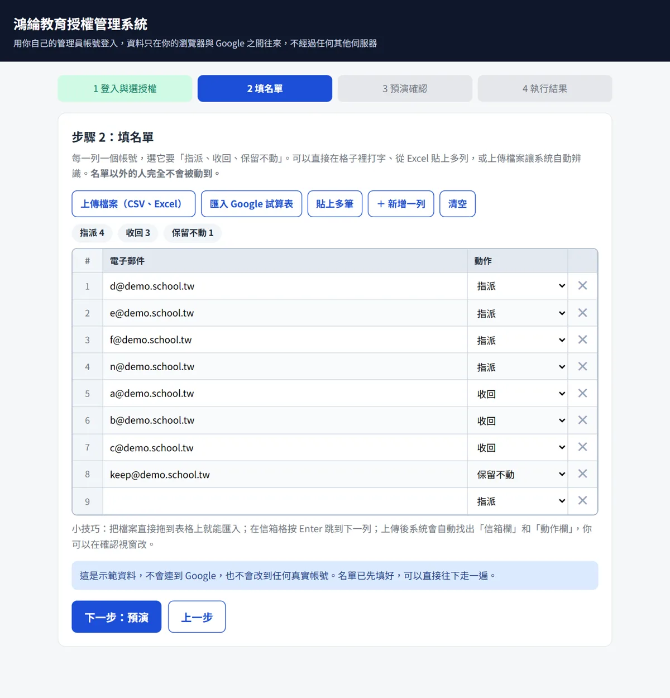
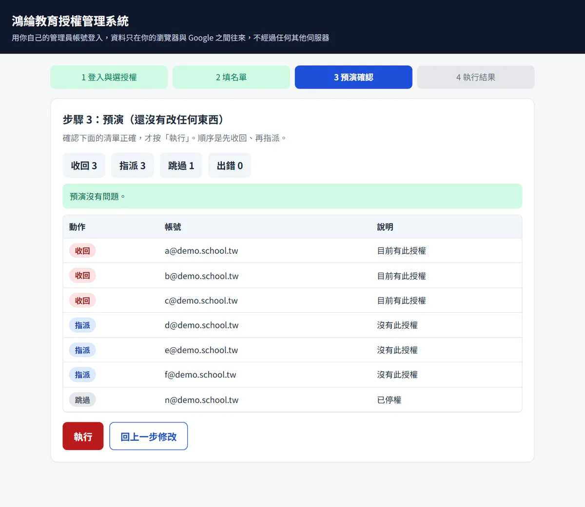
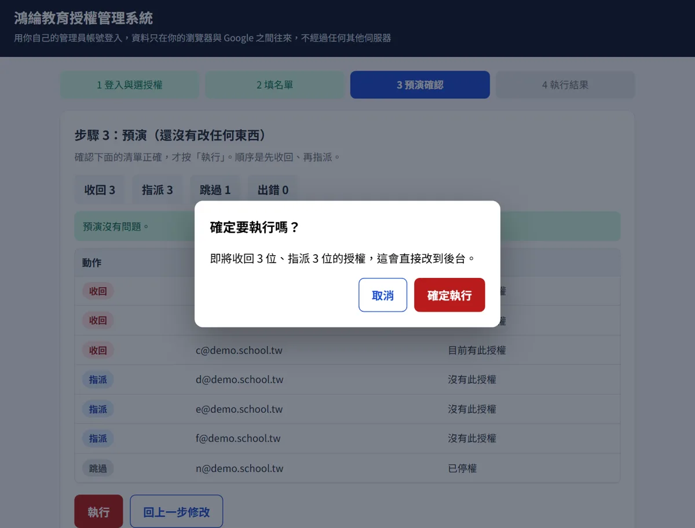
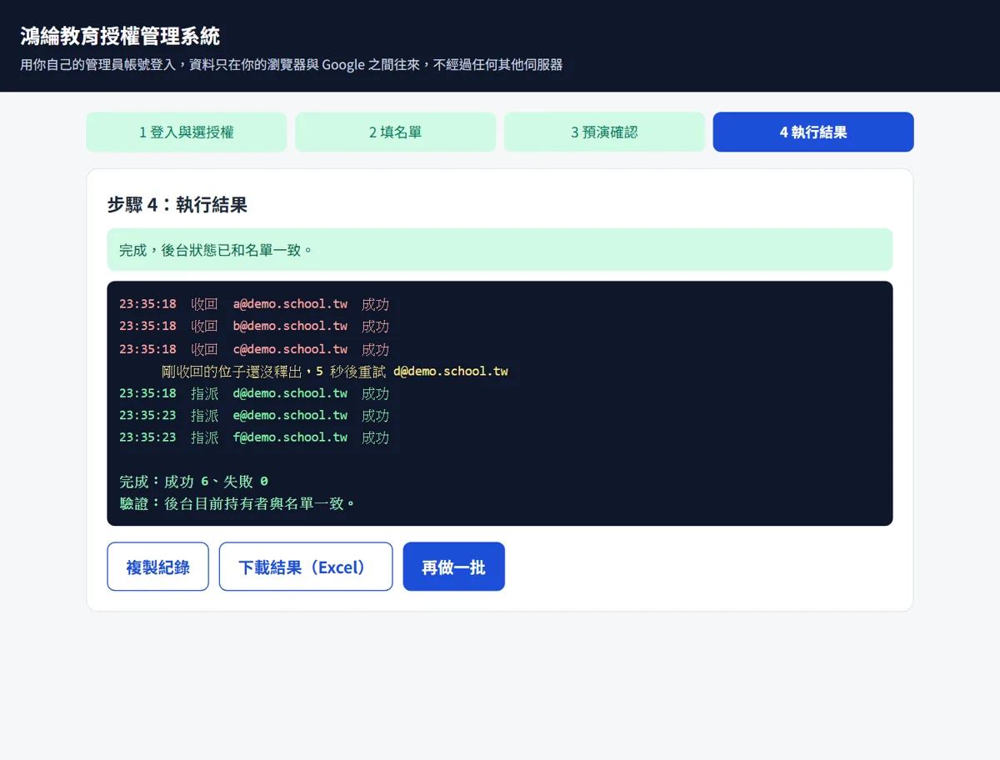

鴻綸教育授權管理系統 操作說明書
怎麼操作：四個步驟，把每月要換的人指派或收回。
想了解背後怎麼運作：運作原理 ｜ 完整使用說明書 ｜ 回授權管理系統
1. 一頁看懂
十一月AI Pro 名額 2 位，全部用完
- A 老師
- B 老師
- 保留帳號（不動）
- C 老師（沒有）
- D 老師（沒有）
→
十二月初
自動換人
十二月初
自動換人
十二月同樣 2 位名額，換一批人
- A 老師（收回）
- B 老師（收回）
- 保留帳號（不動）
- C 老師（指派）
- D 老師（指派）
名額只有幾位時，用輪替讓更多老師輪流用到。名單由學校決定，程式只照名單做。
你要準備的只有一份名單：誰要指派、誰要收回。程式先算出「要收回誰、要指派誰」給你看（預演），你確認後才真的動後台。重複跑也不會出事，因為已經一致就什麼都不做。
2. 需要哪些資料、填在哪裡
用網頁版，不用裝任何東西，也不用交出密碼或金鑰：用管理員自己的 Google 帳號登入，資料只在你的瀏覽器與 Google 之間往來。
| 資料 | 去哪裡找 | 填在哪 | 必填？ |
|---|---|---|---|
| 管理員 Google 帳號 | 要有「授權管理」權限 | 步驟 1 按「用 Google 管理員帳號登入」，在 Google 自己的視窗登入（我們不收密碼） | 必填 |
| 要管理哪一種授權 | 自己決定，例如 Google AI Pro | 步驟 1「要管理哪一種授權」下拉選單 | 必填 |
| 目前可用授權數 | 後台「帳單 > 訂閱」，看該授權的「可用」 | 步驟 1「目前可用授權數」。填了額度不夠會整批擋下 | 選填，建議填 |
| 學校網域 | 例如 school.edu.tw | 步驟 1「學校網域」，登入後會自動帶入 | 自動帶入 |
| 輪替名單：每個人的信箱與動作 | 學校提供的名單 | 步驟 2 表格。每列一個信箱，動作選「指派、收回、保留不動」。可手打、整欄貼上、上傳 CSV 或 Excel、匯入 Google 試算表 | 必填 |
名單檔的辨識上傳 CSV、Excel 後，系統會自動找「信箱欄」與「動作欄」，匯入前會跳出預覽讓你確認；沒有動作欄的人，可以統一選指派或收回。
填完先預演先看預演結果，確認要收回與指派的人沒錯，才按「執行」。
3. 網頁版操作（圖文）
不會用命令列的學校管理員，用網頁版就好。下面的畫面是「示範模式」：不連 Google、用假資料，可以放心練習。四個步驟走完就是一次輪替。





圖中的帳號都是 demo.school.tw 的假資料。「下載結果（Excel）」可存成表格留底。
4. 排錯與常見問題
| 看到什麼 | 原因 | 處理 |
|---|---|---|
| 額度不足 | 收回後可用數仍不夠指派 | 在後台補買額度，或減少這次指派的人數 |
| 名單有找不到的人 | 信箱打錯，或帳號已刪 | 回上一步修正；什麼都還沒改 |
| 表格裡有紅色格子 | 不是有效的電子郵件 | 修正或刪除那一列 |
| 沒有權限 | 登入的帳號沒有授權管理或讀取使用者的權限 | 改用具備權限的管理員帳號登入 |
| 驗證失敗：某人應該有授權但沒有 | Google 的列表還沒更新，或真的沒成功 | 等一會兒回步驟 2 再跑一次，已完成的人不會重複異動 |
| Auto License un-assignment is not allowed | 那個授權是組織單位自動指派的，無法收回 | 要在後台改該單位的自動授權設定 |
官方寫「收回後 24 小時才能重新指派」實測 Plus 收回後立刻指派沒被擋，但不同授權是否一樣無法確認，正式操作前建議先用少數帳號試一次。
需要協助：鴻綸科技 06-6371192（週一至週五 08:30–17:30），或寄信到 gfeh@hunglun.com。想了解背後怎麼運作，請看運作原理。